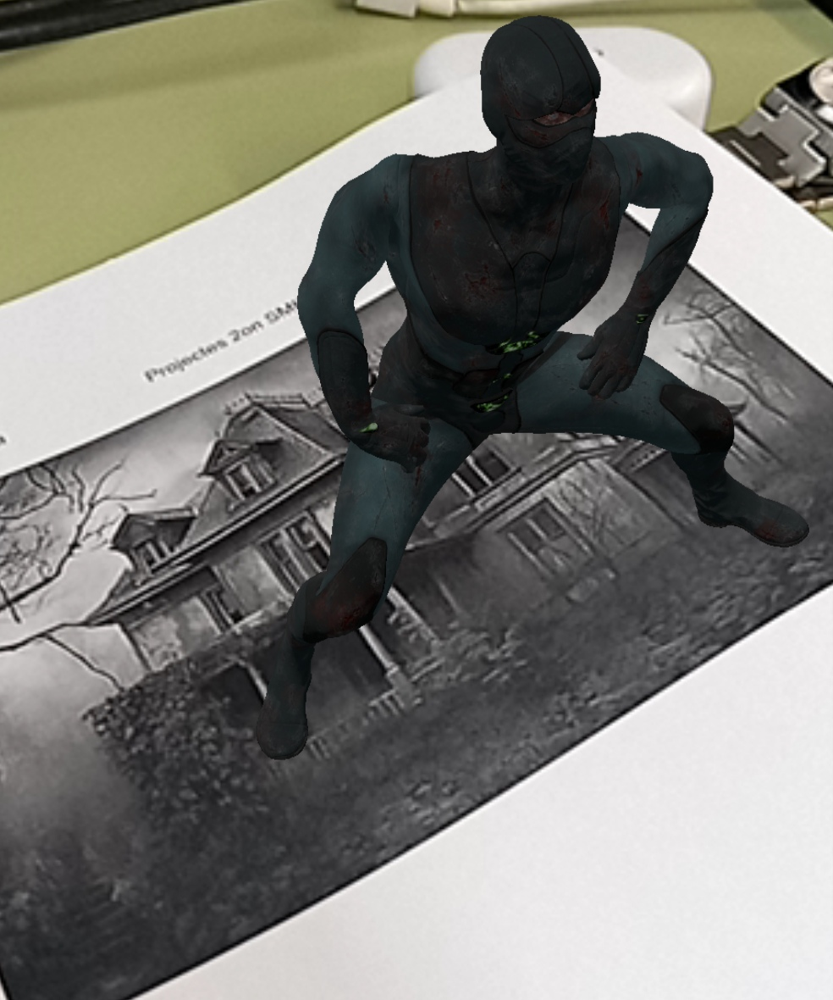
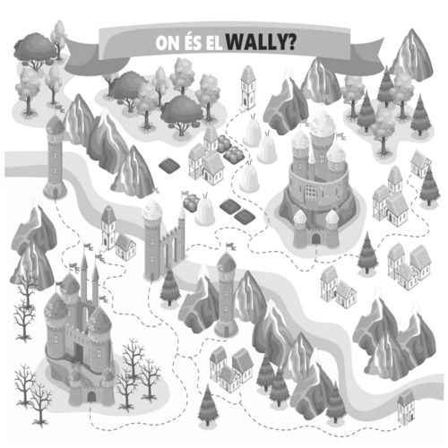
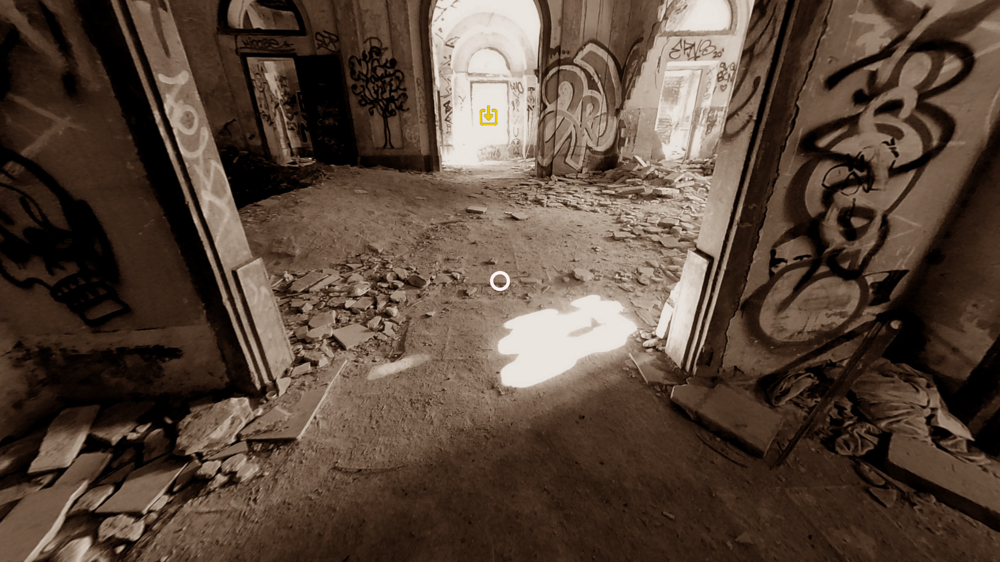
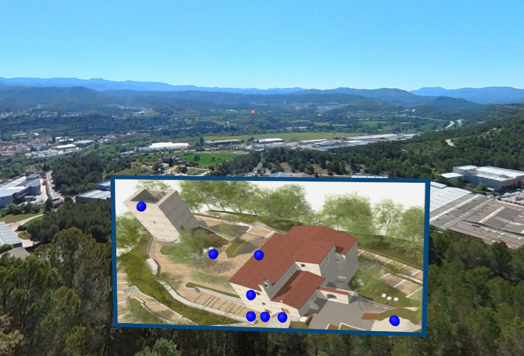

Les llibreries 3D en JavaScript han revolucionat la creació d'entorns virtuals i experiències immersives a la web.
A-Frame i MindAR són dues de les més destacades, cadascuna amb funcionalitats específiques per a diferents tipus de projectes.
Gràcies a aquestes eines, els desenvolupadors podem dissenyar des d'experiències interactives senzilles
fins a aplicacions immersives avançades que combinen realitat virtual, realitat augmentada i interacció 3D.
Aquestes tecnologies han convertit el web en una plataforma cada cop més potent per a la creació de contingut digital innovador.
Aquest portafolis explora aquestes llibreries en profunditat i presenta els projectes desenvolupats amb cadascuna d'elles.
Un petit exercici amb A-frame per testejar l'apliació en diversos dispositius: en pantalla d'ordinador, en format mòbil i a unes ulleres de Realitat Virtual

Bandido Haciendo Twerking
Muñeco 3D que baila twerk, que sale al enfocar con el movil

wally
Un Mapa donde te sale un personaje dependiendo de donde enfoques y en una parte de la imagen una foto jpg que en este caso es wally.
El Zorro
Te pone una gorra y unas gafas chulonas
El cubisme
Si le das click a los objetos haran animaciones

Casa abandonada
Mejor que explicarlo mejor experimentarlo👻

Conjunt Monumental Castellet
Mapa con puntos azules que si clickas te lleva a la localización exacta en 360 con audio
Marc Igeño
Estudiant de SMIX del cicle formatiu de Grau Mitjà en Sistemes Microinformàtics i Xarxes.
M'apassiona la tecnologia i la informàtica, especialment tot el que té a veure amb la configuració,
el manteniment i la seguretat dels sistemes informàtics.
Durant la meva formació, he adquirit coneixements en hardware, xarxes, sistemes operatius i administració de servidors.
M'agrada treballar en equip i solucionar problemes tècnics de manera eficient.
Estic motivat per continuar aprenent i aplicar els meus coneixements en un entorn professional.